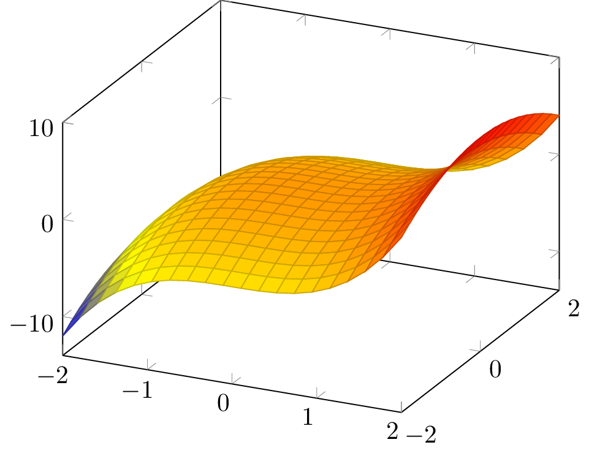

v1.1 ¡Ahora con menos azúcar!
En Ubuntu y derivados es recomendable no usar los paquetes de apt.
Instalar desde tug.org
.tex.%pdflatex minimal.texLos comandos se escriben empezando por una barra invertida (Alt Gr + º):
\maketitle produce el título\title{Ejemplo} indica cuál es el título\sqrt[3]{2} produce \(\sqrt[3]{2}\) (modo matemáticas)\begin{document}documentclass especifica el tipo de documentousepackage permite añadir paquetesbabel, inputenc, fontenc para castellanoamsXXXX para matemáticasPodemos dividir el documento en secciones con section, subsection, subsubsection…
$: \(\sum_{i=1}^n \frac{i}{4}\)
$$ o \[,\]: \[\sum_{i=1}^n \frac{i}{4}\]
Algunos símbolos se escriben directamente:
0123456789 . ,
+ - = ! / ( ) [ ] < > | ' :Para otros símbolos necesitamos \comandos.
Escribimos letras griegas por su nombre en inglés:
\gamma |
\(\gamma\) |
\Gamma |
\(\Gamma\) |
\(\pi\) y \(\sigma\) tienen versiones para sumatorio y productorio:
\Pi |
\[\Pi\] | \prod |
\[\prod\] |
\Sigma |
\[\Sigma\] | \sum |
\[\sum\] |
Algunas letras tienen varias versiones:
\epsilon |
\[\epsilon\] |
\varepsilon |
\[\varepsilon\] |
Algunos símbolos (\(\mathbb{C}\)) usan una fuente especial:
\mathbb{R} |
\(\mathbb{R}\) |
\mathcal{C}[0,1] |
\(\mathcal{C}[0,1]\) |
\mathfrak{h} |
\(\mathfrak{h}\) |
\mathsf{CRing} |
\(\mathsf{CRing}\) |
El resto de símbolos no siguen unas reglas concretas. Puedes usar Detexify.
| Subíndices | a_n |
\(a_n\) |
| Superíndices | e^{i\pi} |
\(e^{i\pi}\) |
| Fracciones | \frac{1}{2} |
\(\frac12\) |
\left y \right ajustan el tamaño de los paréntesis:
\(\displaystyle f(\int_0^1 e^x \; dx)\quad\) vs. \(\displaystyle \quad f\left(\int_0^1 e^x \; dx\right)\)
¿Cómo distinguimos variables y nombres? \(lim = l \cdot i \cdot m\)
lim_{x \to 0} |
\(\displaystyle lim_{x \to 0}\) | :( |
\lim_{x \to 0} |
\(\displaystyle \lim_{x \to 0}\) | :D |
En general usamos operatorname.
\textit{cursiva} |
cursiva |
\textbf{negrita} |
negrita |
\texttt{código} |
código |
Se escriben entre \begin{env} y \end{env}
Véase el documental
Kun miaj uloj en la restoracio Luna Rosa, manĝante bonegan picon
\[f(x) = \begin{cases} 0 & \text{si } x \in \mathbb{Q} \\ 1 & \text{si } x \notin \mathbb{Q} \end{cases}\]
Podemos crear nuevos comandos:
\newcommand{\der}[2]{
\frac{d#1}{d#2}
}
\[\der{f}{x}\]\[\frac{df}{dx}\]
\begin{tikzpicture}
\begin{axis}[samples=20]
\addplot3[surf,domain=-2:2]
{sin(deg(x))*cos(deg(y))};
\end{axis}
\end{tikzpicture}
Usamos graphicx:
\usepackage{graphicx}
% ...
\includegraphics{perro}Formato más sencillo:
---
title: Ejemplo
author: Pablo
---
Este es un
documento de ejemplo.Compilamos con:
pandoc minimal.md
-o minimal.pdf
LaTeX (y pandoc!) permiten muchas más cosas:
Algunos recursos: